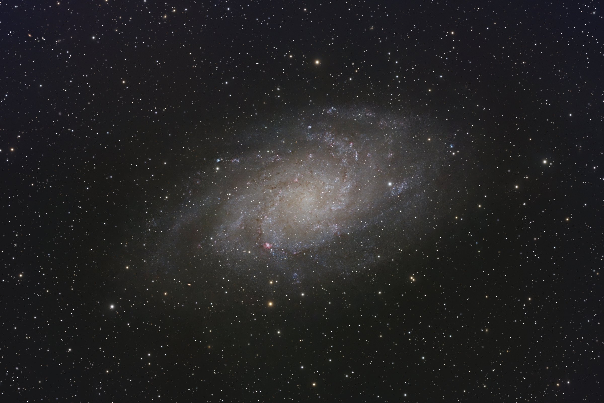
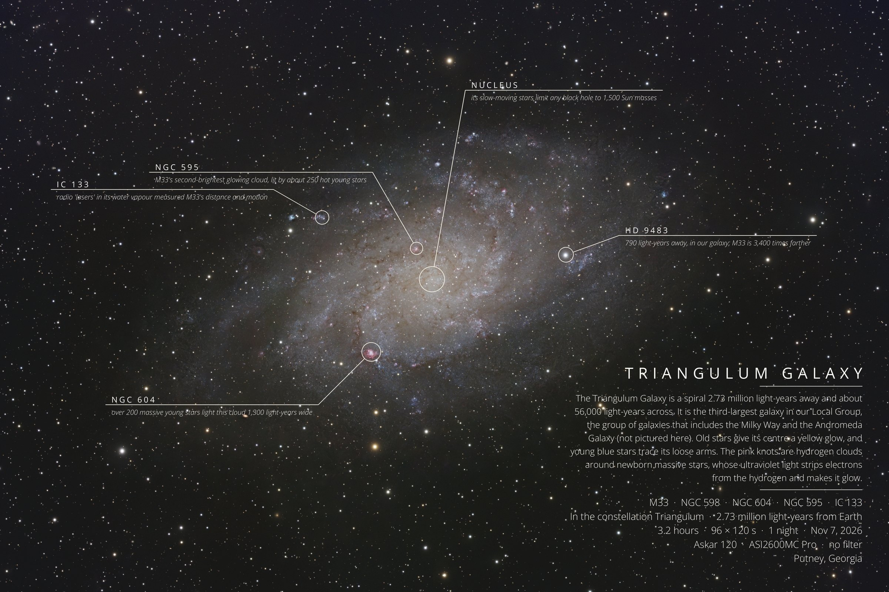

The Triangulum Galaxy is a spiral 2.73 million light-years away and about 56,000 light-years across. It is the third-largest galaxy in our Local Group, the group of galaxies that includes the Milky Way and the Andromeda Galaxy (not pictured here). Old stars give its centre a yellow glow, and young blue stars trace its loose arms. The pink knots are hydrogen clouds around newborn massive stars, whose ultraviolet light strips electrons from the hydrogen and makes it glow.